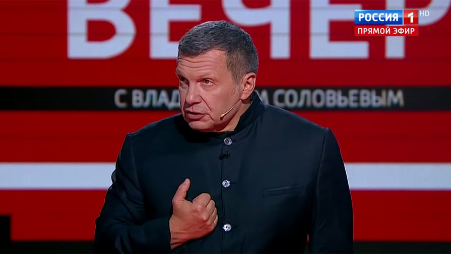

Журналист. Пропагандист. Голос Кремля.

Владимир Рудольфович Соловьёв — один из самых узнаваемых и спорных медийных лиц России. Прошёл путь от инженера-металлурга и преподавателя до главного телевизионного лица государственной пропаганды. Его имя стало синонимом агрессивной риторики, многомиллионных гонораров и вилл на озере Комо.
Родился в еврейской семье. Отец — Рудольф Наумович Виницковский, преподаватель политэкономии, взявший фамилию Соловьёв ещё до рождения сына. Мать — Инна Соломоновна Шапиро, искусствовед. Дед по матери — Соломон Львович Шапиро.
После окончания элитной спецшколы № 27 с углублённым изучением английского языка попытался поступить в МИФИ и на физфак МГУ — документы не приняли из-за еврейского происхождения. В итоге поступил в Московский институт стали и сплавов (МИСиС).
Окончил МИСиС с отличием по специальности «инженер-металлург». Защитил диссертацию в Институте мировой экономики и международных отношений АН СССР, стал кандидатом экономических наук. Преподавал физику, математику и астрономию.
Уехал в США преподавать экономику в Алабамском университете. Вернувшись в Россию, занялся бизнесом — открыл производство дискотечного оборудования, кадровое агентство. По собственным словам, продал бизнес в 90-е, став, по его же признанию, «богатым человеком».
Россияне узнали о Соловьёве через программу «Процесс» на ОРТ вместе с Александром Гордоном. Следом — «Страсти по Соловьёву» (ТНТ), «К барьеру!», «Соловьиная ночь» (ТВ-6), «Воскресный вечер с Владимиром Соловьёвым». Вес достигал 140 кг — потом похудел на 80.
ФБК опубликовал видеорасследование о недвижимости телеведущего: квартира в центре Москвы по заниженной цене, вилла на озере Комо. Соловьёв ответил: «Я богатый человек, об этом кто-то не знал?»
После начала войны в Украине попал под санкции ЕС, США, Великобритании и других стран. Факт Италия арестовала две его виллы на озере Комо (общая стоимость — около €8 млн). Факт Неизвестные подожгли одну из вилл, залили бассейн красной краской. Факт Соловьёв был объявлен в розыск на Украине.
Источники: Реестр санкций ЕС · OFAC (США)
Удостоен звания «Герой Донецкой Народной Республики». Факт Продолжает вести программы «Вечер с Владимиром Соловьёвым» и «Москва. Кремль. Путин». По оценке Госдепа США — «самый энергичный кремлёвский пропагандист». Факт
Февраль: смерть Навального в колонии. Соловьёв в эфире: «Он сам выбрал этот путь. Его никто не заставлял возвращаться». Август: Курский прорыв ВСУ. Соловьёв требует немедленного ядерного удара — один из самых истеричных эфиров за три года войны. Ноябрь: победа Трампа. Тон меняется кардинально: в студии праздник, Соловьёв называет Трампа «человеком, с которым можно договариваться». Три события — три разных режима работы одного пропагандиста.
Продолжает ежедневные эфиры — три года ни разу не произнеся слово «война» (уголовная статья). Формирует нарратив «неизбежной победы» на фоне трамповских переговоров: «Украина капитулирует. Это вопрос времени». По данным независимых исследователей — самый цитируемый российский телеведущий на Западе: не как источник, а как объект мониторинга.
Соловьёв никогда не скрывал своего происхождения. Сам называет себя евреем и исповедует иудаизм — тема, которую он поднимал в публичных высказываниях, порой весьма неожиданным образом.
Отец — Рудольф Наумович Виницковский, сменивший фамилию. Мать — Инна Соломоновна Шапиро. Дед по материнской линии — Соломон Львович Шапиро. Все трое работали на режимных предприятиях советской эпохи. Семья была светской, интеллигентной.
В 1980 году после школы Соловьёву отказали в приёме документов в МИФИ и на физический факультет МГУ — официальная причина по свидетельству его матери заключалась именно в еврейском происхождении. Это была распространённая советская практика «пятого пункта» в анкете.
По собственному признанию исповедует иудаизм. В публичных выступлениях неоднократно подчёркивал свою еврейскую идентичность — особенно когда это было выгодно риторически. Тема происхождения появлялась в его высказываниях резко и неожиданно.
После ареста вилл в Италии в 2022 году Соловьёв заявил в эфире: «Сначала они лишают евреев таких, как я, собственности в Италии. Нам, евреям, не привыкать, как европейские нацисты нас лишают собственности». Критики указывали на цинизм этого сравнения в устах человека, поддерживающего войну.
«Самый энергичный кремлёвский пропагандист.»
«Ведущий пропагандист государственного телевидения, активно продвигающий официальную российскую позицию по Украине и несущий ответственность за поддержку действий, подрывающих территориальную целостность Украины.»
«Его программа смотрит в среднем 2–3 миллиона человек еженедельно. Соловьёв — самый узнаваемый голос кремлёвской пропаганды в прайм-тайме.»
«Я ничего не готов возражать Владимиру Соловьёву, потому что не могу вступать в полемику со своим кумиром. В свободное время я конспектирую все его слова.»
«Пропагандист.»
«Никто из семьи Соловьёва, включая пожилую маму, не имеет хоть сколько-нибудь сопоставимых доходов для приобретения, даже для содержания такого имущества.»
«Он воспевает войну, а сам откосил от армии. Кричит, что Крым — лучший курорт, а сам отдыхает на озере Комо. Ругает ЕС, а сам — резидент Италии.»
На протяжении карьеры Соловьёв был как берущим, так и дающим интервью. Темы, поднимавшиеся журналистами и публикой, раз за разом возвращались к одним и тем же болевым точкам.
Расследования ФБК и «Важных историй» зафиксировали разрыв между публичным образом патриота и реальным образом жизни. Вся жилая недвижимость за рубежом — в «загнивающей» Италии.
Все утверждения в данном досье основаны на открытых публичных источниках. Факты, отмеченные как Факт, имеют прямые первичные источники. Отмеченные как Интерпр. — авторская интерпретация задокументированных событий.